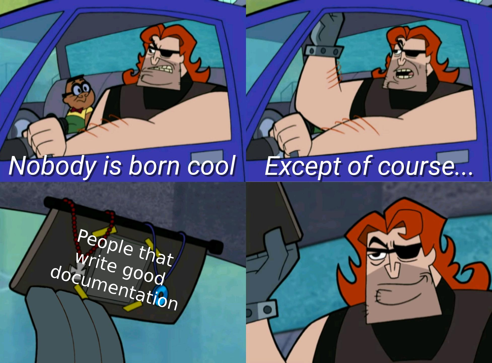

Example Package
"com.kinstrife.core.example-package": "file:/GameDev/Core/Packages/ExamplePackage"`
This is an example package that contains all the necessary files for a complete Kinstrife package. It can be copied to serve as a template for new packages.
Important
When copying this package as a template, you will need to edit/adjust the assembly definitions (kinstrife.core.examplepackage.asmdef) and the package manifest (package.json), as well as the documentation files.
Documentation Info
Additional markdown features
DocFX supports an extended set of markdown, which are documented here. This document includes some samples to copy and paste to get started quickly. To do so, copy the relevant parts from the markdown file in Packages/ExamplePackage/intro.md.
Images
Images can be included with regular markup syntax.
Cross references
As in this file, you can assign identifiers (uid) at the top of documentation files. These can be used to create cross links. Cross links also work for API references, where the uid is simply the name of the type/method/property including its namespace and containing types.
Code
In addition to regular markdown code with back ticks (` or ```) it is also possible to include code snippets from source code:
It looks like the sample you are looking for does not exist.
Tabbing & highlighting
Note
You can highlight important aspects in notes. In addition to NOTE, you can also create a TIP, WARNING, IMPORTANT and CAUTION, implying different levels of urgency.
It is also possible to divide content into tabs:
Tab content-1-1.
Video
Warning
The video URL must be the embed URL of the video